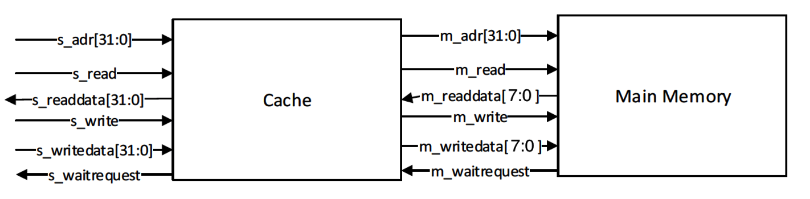

Pipelined Processor
Computer Organization and Architecture , Mcgill university
I've taken ECSE425 - Computer organization and Architecture course at the Mcgill University (I would highly recommend this course!). The project of this course was to develop a standard, five-stage, 32-bit pipelined MIPS processor that can execute a subset of the MIPS instruction set. Pipelined processors were designed to increase the overall CPU throughput by using instruction level parallelism. Each instruction is divided into smaller steps, performed by different functional units in the CPU that are pipelined together. We can overlap the execution of these smaller steps on several instructions, allowing for better use of resources and greater throughput. Different types of hazards limit the improvement in performance gained with pipelining. We were required to mitigate some of these hazards by using different techniques like forwarding and instruction caching. It was mainly developed by VHDL and simulated in ModelSim.
Component Descriptions
The pipeline divides the work of processing a instruction into five stages: Instruction Fetch (IF), Instruction Decode (ID), Execution (EX), Memory (MEM), and Write Back (WB).
The instruction fetch stage (IF) fetches the instruction from memory based on the current value of the program counter register (PC), and sends the instruction to the next stage — decode stage.
The instruction decode stage (ID) receives the instruction from IF and will send appropriate signals to the other units in the pipeline after decoding the instruction. It will notify the ALU to perform the appropriate operation based on the opcode of the instruction, and it would read operand from register files and send value to the ALU as input, if needed. Moreover, it will also handle the signals for branching and forwarding. If there is a branch, a signal from ID will be sent back to IF to change the PC value. A signal for the forwarding unit keeps track of the destination register of the previous instruction. Thus, the forwarding unit can decide whether to operate on the current register value or the ALU output. If forwarding needs to be conducted, another signal informs the forwarding unit whether the ALU should receive the result from the last instruction or from the memory stage.
The execution stage (EX) would receive signals from both ID stage and the forwarding unit. It contains ALU to performs integer arithmetic and logical operations. In a short, EX is used to operate on the operands based on the opcode.
The memory stage (MEM) is responsible for all data memory accesses. The MEM gets a signal from the ID to determine whether the current instruction actually has a memory access. The MEM also sends a signal back to the ID to make the pipeline stall in case memory is busy.
The write back stage (WB) would receive signals from the EX stage to determine whether it needs to stall for memory or it can take the value from the EX stage directly and perform write back to the destination register, which is sent from ID.
The forwarding unit is a hardware solution to deal with data hazards, which is used to properly pass early values from the pipeline registers to the input of the ALU rather than waiting for WB to write to the register file. It receives signals from ID and chooses which values should be sent to EX. There are two different cases. Firstly, when the latter instruction depends on a non-memory instruction that preceded to it, the forwarding unit will feedback the output of the EX back to that stage instead of sending the register value as read by the ID. Secondly, when the latter instruction depends on a memory instruction that preceded it by either one clock cycle or two clock cycles, the forwarding unit will pass the output of the MEM to the EX stage. For this reason, the forwarding unit keeps track of the destination register of the two previous instructions
The hazard detection unit gets signal from ID and decides whether the pipeline should stall. For example, when a latter instruction depends on a memory instruction that came right before it, the pipeline will have to stall for a clock cycle and then the result from memory will be forwarded to the EX stage. Another case where a stall is required is when we have a branch instruction that is dependent on a previous instruction. This should be handled as a separate case because our pipeline resolves branches in the ID (while other instructions process data in the EX stage), making forwarding impossible. As a result, we need to stall when the branch condition depends on a destination register from the immediately preceding instruction. When the pipeline should stall, the hazard detection unit sends a signal to the ID and the ID will stall the appropriate units in our pipeline.
Optimization
Two types of caches are included in this project. An instruction cache is to speed up executable instruction fetch. A data cache is to speed up both data fetch and data store.
The caches implemented in our project have the following characteristics and parameters:
- Write-back policy
- Direct-mapped
- 32-bit words
- 128-bit blocks (4 words per block) word addressable
- 4096 bits of data storage (32 blocks)
- 32-bit addresses
- data tags flags (valid bit, dirty bit)

For the instruction cache, it only needs to read instruction without write. We've created three stages of finite state machine: idle and compute stage, memory access stage, and write-back and memory read stage. In the first stage, if a read hit exists, the instruction cache directly outputs the result. Otherwise, it would be read miss. After read miss occurs, the cache will determine whether it needs to conduct write-back first or immediately read from memory without write-back based on its dirty bit. The second stage is more like a control stage, in which several intermediate signals are set and reset. The third stage is for interacting with memory, including write-back (if dirty) and reading from memory. Both reading and writing require four times of accessing memory to complete, that is, one word at a time. After write-back is conducted, it will go back to the first stage and follow the hit pattern.
For the data cache, it is responsible for both data read and data wirte. However, the only change of the finite state machine for data cache is in the first stage. If a hit occurs, data will be directly written into the block. The rest of stages are the same as the instruction cache.
Testing and Performance Evaluation
Several MIPS programs were used to test the performance of the processor. The run time of the programs were compared for each processor (with and without the cache).
Factorial program: it is used to calculate the factorial of an integer. The result is stored into register 2. The program contains basic ALU execution: add and multiply and uses branch instruction to conduct looping.
Fibonacci program: it is used to generate Fibonacci series. The generated numbers are first stored in register 2, and then to adjacent locations in memory. The program generates in total 32 numbers. Store word instructions show the advantage of cache for interacting with memory.
GCD Program: it finds the greatest common divisor of 2 number using the Euclid’s Algorithm.
# This program generates the factorial of an integer, n > 0
# It stores the result in Reg[2] ($2)
# Example: 6! = 1 * 2 * 3 * 4 * 5 * 6
# initializing the beginning of Data
addi $11, $0, 2000
# n = 6
addi $2, $0, 6
addi $3, $0, 1
addi $4, $0, 1
loop: beq $2, $4, DONE
addi $4, $4, 1
mult $3, $4
mflo $3
j loop
# store result
DONE: sw $3, 0($11) addi $10, $0, 8 # number of generating Fibonacci-numbers
addi $1, $0, 1 # initializing Fib(-1) = 0
addi $2, $0, 1 # initializing Fib(0) = 1
addi $11, $0, 2000 # initializing the beginning of Data Section address in memory
addi $15, $0, 4 # word size in byte
loop: addi $3, $2, 0 # temp = Fib(n-1)
add $2, $2, $1 # Fib(n)=Fib(n-1)+Fib(n-2)
addi $1, $3, 0 # Fib(n-2)=temp=Fib(n-1)
mult $10, $15 # $lo=4*$10, for word alignment
mflo $12 # assume small numbers
add $13, $11, $12 # Make data pointer [2000+($10)*4]
sw $2, 0($13) # Mem[$10+2000] # Fib(n)
addi $10, $10, -1 # loop index
bne $10, $0, loop
EoP: beq $11, $11, EoP #end of program (infinite loop) addi $13, $0, 2000
addi $10, $0, 35
addi $11, $0, 25
gcd: beq $10, $11, DONE
slt $2, $11, $10
bne $2, $0, loop1
sub $11, $11, $10
j gcd
loop1: sub $10, $10, $11
j gcd
DONE: sw $10, 0($13)Conclusion
This project allowed us to gain insights into how modern pipelined processors are implemented. We started by designing a simplified pipeline with basic forwarding capabilities and then improved our implementation by using an instruction cache, allowing us to reduce the instruction fetch time. While the implementation of the pipeline is somehow fixed, the cache has many design parameters that can be changed like cache size, associativity and replacement strategy.
The cache evaluation shed light into the effect of cache size, associativity and replacement policy. Other fairly simple pipeline improvements that could be implemented in the future are better branch prediction and register renaming to eliminate name dependencies.
There is still one more thing...
You can find everything about this project at Git Hub.
You may find it very useful: MIPS Green Sheet.